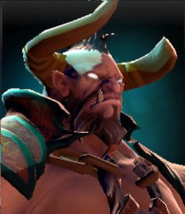
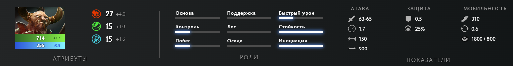
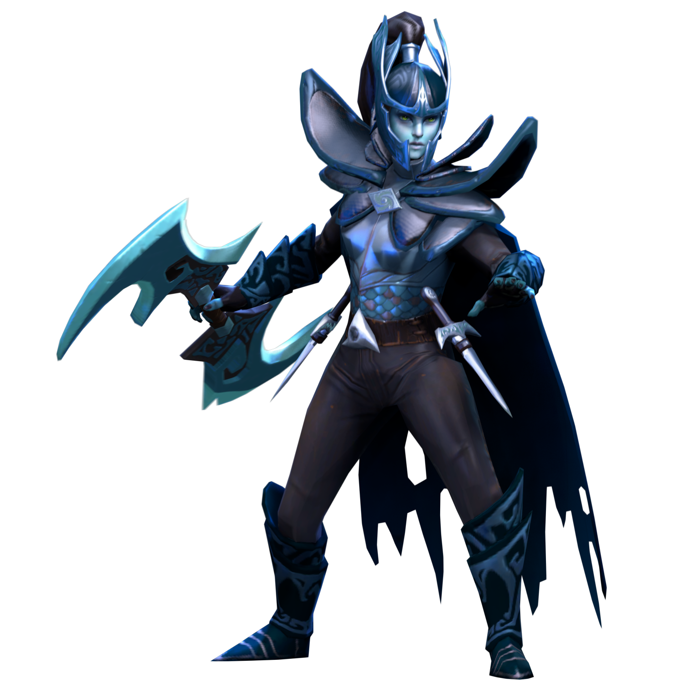
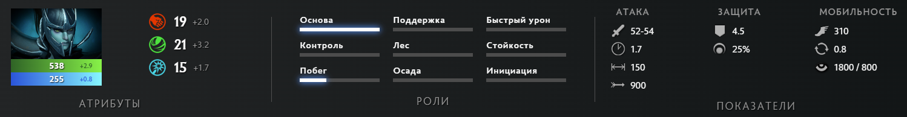
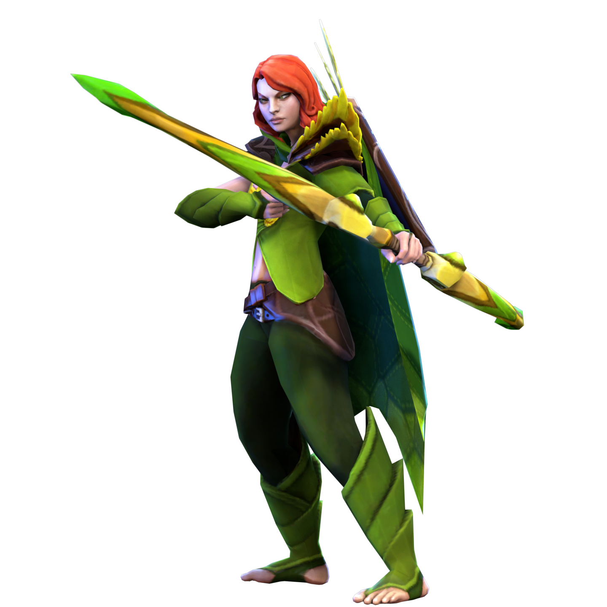
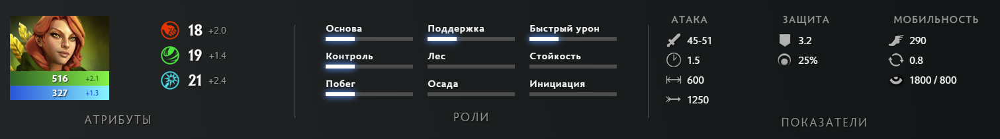
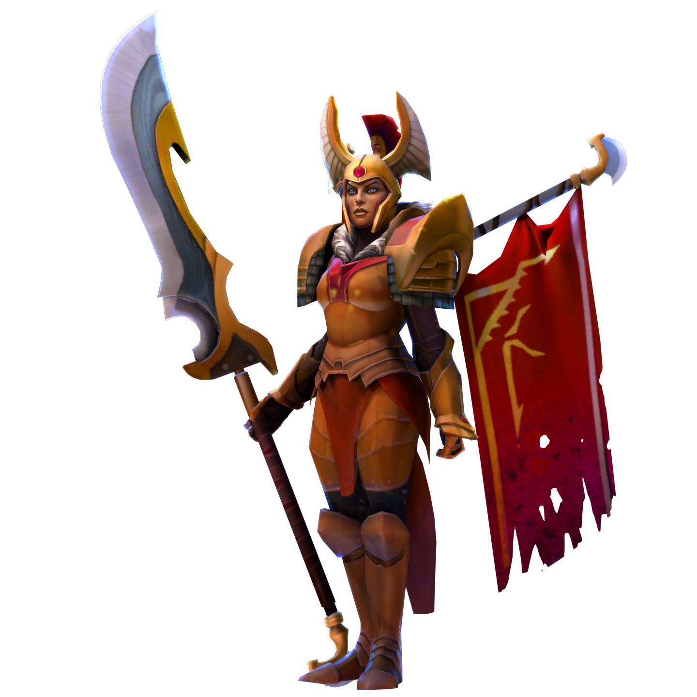
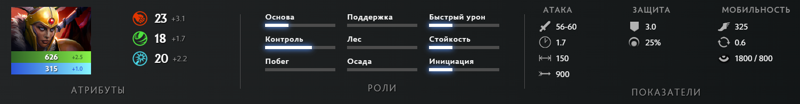
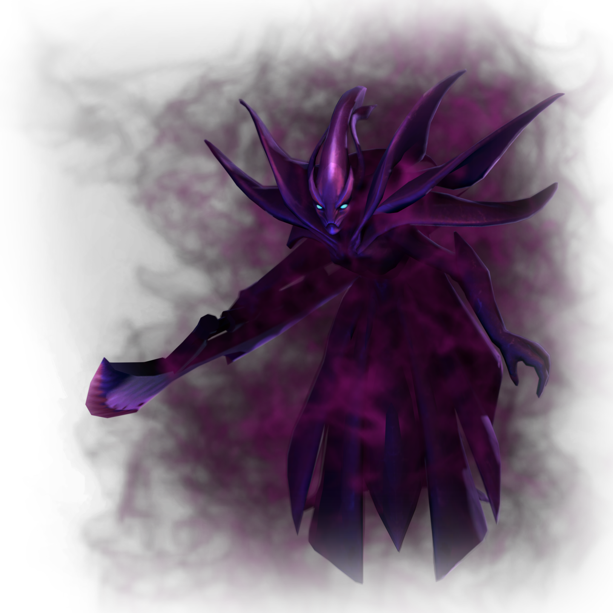
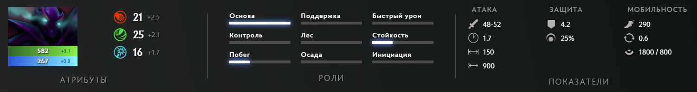

Centaur Warrunner
Говорят, что жизненный путь кентавра вымощен телами павших. Если это так, то для кентавра по имени Warrunner этот путь был действительно длинным. Многие чужестранцы, повстречав четырёхногих воинов из кланов Друуда, зачастую ошибочно принимают их за простоватых громил. У их языка нет письменной формы, культура бедна на графические символы; в музыке нет чёткой структуры, а в религии — строгих правил и догм. У кентавров лучшее проявление своих мыслей и чувств — это битва. Это самовыражение в чистом виде. И если убийство среди кентавров считается искусством, то самый талантливый из их творцов — Брэдводен. Свою несокрушимую мощь он взрастил на землях Омекса, на древней арене, где тысячелетиями кланы кентавров собирались, чтобы провести гладиаторские церемонии. И чем дальше распространялась слава о нем, тем все больше зрителей со всего света прибывали, чтобы увидеть великого кентавра в действии. Всегда выходя на арену первым и уходя последним, он создавал шедевры каждым брызгом крови, каждым взмахом лезвия. Такова его поэзия крови и стали, сложный узор на бледных песках бойни. Брэдводен побеждал до тех пор, пока арена не взрывалась выкриками его имени — он стал непобедимым чемпионом. Ему был вручён великий пояс Омекса, но в победе ощущалась лишь пустота. Каков же воин без постоянного вызова? Великий кентавр ускакал из Омекса в тот же день с новой целью. Для своего народа Warrunner — это величайший воин, который ступал на арену. Теперь Warrunner стремится доказать, что он — лучший воин, когда-либо живший.


Phantom Assassin
Сёстры Вуали, считающие убийство священной частью естественного цикла жизни, находят новых воспитанников в гаданиях. О своих жертвах сёстры узнают в медитации и пророческих изречениях. Они не принимают контрактов, и, похоже, не преследуют жертв из-за политики или корысти. Их убийства не выглядят частью какого-то замысла, и могут показаться не связанными между собой: сегодня жертвой станет человек с великой властью, завтра — крестьянин или копатель колодцев. Какой бы между убийствами ни было связи, её знают лишь сёстры. Они считают убитых жертвенным даром, а смерть от рук ордена — большой честью. Не ведающие своей личности, взращённые лишь на устоях ордена, убийцы легко заменяют друг друга, и число их неведомо. Возможно, их много; возможно, их единицы. Что лежит под вуалью — тайна без ответа. И лишь изредка эта сестра, когда никто не слышит, поднимает свою вуаль, чтобы нарушить запрет, прошептав своё имя: Мортред.


Windranger
Западные леса крепко хранят свои секреты. Один из них — Лиралей, непревзойдённая лучница лесов, любимая крестница ветра. Это сейчас её прозвали ветрокрылой — но семья Лиралей поглибла во время ночного шторма: буря разрушила дом до основания, открыв его жителей всем ветрам. Лишь новорождённая выжила среди развалин, пронизанных смертью и разрушением. Когда шторм стих, ветер услышал плачущего в траве везучего младенца. Он пожалел ребёнка и перенёс его на порог дома в соседней деревне. Следующие годы ветер то и дело навещал девочку, наблюдая со стороны, как она оттачивает свои навыки. Теперь, после многих лет тренировок, стрелы Лиралей неизменно попадают точно в цель. Она двигается с ослепительной скоростью, будто бы подгоняемая ветром, а враги её гибнут в шквале стрел, словно их наказывает сама природа.


Legion Commander
Они пришли без предупреждения. Внутри городских стен Стоунхолла вдруг раздался ужасный грохот, и из неизведанной тьмы явились бесчисленные твари, несущие пламя и разруху, убивающие и захватывающие матерей и сыновей во имя тёмных целей. Из бывшей когда-то могучей армии Стоунхолла лишь Бронзовый легион под руководством главнокомандующей Тресдин находился рядом и смог ответить на зов помощи. Въехав в город, они начали пробиваться через окровавленные переулки и пылающие рынки, прорубая свой путь к источнику внезапного вторжения — пространственному расколу на главной площади, на краю которого бушевал лидер Орды бездны. Охваченный губительным блеском, он взмахивал своим гигантским клинком, рассекая воинов напополам, и плоть его жертв тут же начинала разлагаться. Тресдин подняла свой окровавленный меч и взглянула на чудовище. Оно обернулось, обнажив в улыбке массу клыков. Забыв о битве, бушующей вокруг, они бросились навстречу друг другу. Отражая один выпад за другим, пара кружилась в смертельном танце, пока солдаты Бронзового легиона терпели сокрушительное поражение. Тресдин сделала выпад, а враг встретил её своим мечом. Сильнейший удар сбоку заставил Тресдин покачнуться, но она собрала свои силы для ответного взмаха. Клинок ударился о клинок, вошёл по рукоять в кривую лапу, разорвав её надвое, разбрызгивая ужасающую смесь искр и крови. Подлые твари ошеломлённо смотрели на битву, а Тресдин не прекращала бить, вонзая меч всё глубже, прямо к неистово бьющемуся сердцу чудовища. Раздался жуткий вой, донёсшийся до самых облаков, и монстр разразился потоком крови и страдания. Адский портал содрогнулся. Сила, питающая его, исчезла так же внезапно, как и появилась. Оставшиеся враги пали под напором стали Стоунхолла. Победу не было смысла праздновать: город лежал в руинах, выживших осталось совсем немного. Пожар продолжал полыхать. Развернув свои знамёна, Тресдин собрала уцелевших союзников. В гневе она дала клятву отомстить силам бездны, и обречён будет тот, кто встанет на её пути.


Spectre
Равно как самая непостижимая энергия всегда стремится к состоянию покоя, так и Меркуриал, воплощающую неудержимые и жестокие силы, непреодолимо притягивает к сценам раздора, что возникают в материальном мире. Её обычное спектральное состояние превосходит пределы восприятия, и каждый раз, обретая физическую форму, она теряет воспоминания о себе... но не о своей цели. В пылу схватки её личность разбивается и преображается, и вновь начинается процесс самоосознания. Она быстро вспоминает, что имя ей — Меркуриал, а заполонившие поле боя призраки — не более чем тени её самой, единственной и настоящей. В борьбе за выживание приходит концентрация, истинный разум вновь заявляет о себе, и Меркуриал превосходит материю, вновь и вновь возрождаясь в своей вечной форме вплоть до последних моментов победы или поражения.
